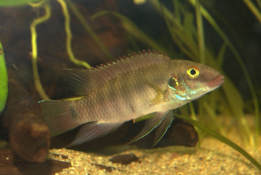

Systématique
- Ordre : Cichliformes
- Famille : Cichlidae
- Genre : Pelvicachromis
- Espèce : P. rubrolabiatus
- Auteur : Lamboj, 2004

Pelvicachromis rubrolabiatus est un cichlidé nain d'Afrique de l'Ouest, membre du groupe "humilis". Décrit officiellement en 2004 par Anton Lamboj, son nom d'espèce vient du latin ruber (rouge) et labium (lèvre), faisant référence à la coloration rouge intense des lèvres souvent observée chez les mâles dominants.
Le mâle peut atteindre une taille de 9 à 10 cm, tandis que la femelle reste plus petite, aux alentours de 7 cm. Le patron de coloration se caractérise par 7 à 8 barres verticales sombres sur les flancs. Contrairement à d'autres espèces du genre, il possède un corps relativement allongé. En période de frai, les couleurs s'intensifient drastiquement, avec des zones jaunâtres sur le haut du corps et un abdomen rouge violacé chez la femelle.
Comme la plupart des membres du groupe "humilis", Pelvicachromis rubrolabiatus est une espèce plus territoriale et parfois plus agressive que le classique P. pulcher. Il vit en couple monogame. C'est un poisson de fond qui reste proche du substrat et des structures de l'aquarium.
En aquarium, il nécessite un décor riche en cachettes et en territoires bien délimités. Un substrat de sable fin est impératif car les poissons aiment creuser pour aménager leur site de ponte. Bien qu'il puisse cohabiter avec des poissons de banc paisibles (type Alestidés), il convient d'éviter les autres cichlidés de fond à moins de disposer d'un volume très important.
Mode : Ovipare, pondeur sur substrat caché (cavitole).
La reproduction est typique des cichlidés nains d'Afrique de l'Ouest mais s'avère plus délicate que chez d'autres Pelvicachromis. Elle nécessite une eau très douce et acide pour réussir. La femelle parade devant le mâle en courbant son corps. Les œufs sont déposés à l'intérieur d'une grotte (noix de coco, pot renversé, anfractuosité rocheuse).
La femelle s'occupe de la garde directe des œufs tandis que le mâle patrouille à l'extérieur. Les alevins atteignent la nage libre après environ une semaine et sont ensuite guidés par les deux parents. Ils se nourrissent immédiatement de micro-nourritures et de nauplies d'artémias.
Dimorphisme sexuel : Le mâle est plus grand avec des nageoires dorsale, anale et caudale plus effilées. Les lèvres rouges sont plus marquées chez lui. La femelle est plus petite, plus ronde et possède un abdomen qui vire au rouge/violet intense lors de la reproduction.
Espérance de vie : 5 à 8 ans en aquarium.
Cette espèce est endémique de la Guinée (Afrique de l'Ouest), particulièrement dans les bassins des rivières Kolenté (Great Scarcies) et Konkouré. Elle fréquente les zones peu profondes des rivières et des ruisseaux forestiers.
Son habitat naturel est caractérisé par une eau limpide, très douce et acide, coulant sur des fonds de sable, de graviers et jonchés de feuilles mortes et de racines. La végétation aquatique y est généralement clairsemée.
Répartition

Origine naturelle :
- Guinée (Bassin du Konkouré et de la Kolenté).
- Espèce endémique à distribution restreinte.
Statut : Rare dans le commerce, souvent disponible via des circuits de passionnés ou des importations spécifiques.
Paramètres de maintenance
Température : 24 à 27 °C.
pH : 5,5 à 6,5 (Indispensable pour la reproduction).
GH : 1 à 8 °dGH (Eau très douce).
Courant : Faible à modéré.
Volume conseillé : Minimum 100-120 L pour un couple.
Régime alimentaire
Régime : Omnivore à tendance carnivore.
Il consomme des petits invertébrés, des larves d'insectes et des détritus dans le milieu naturel.
En aquarium, il accepte les nourritures sèches de qualité, mais pour maintenir une santé optimale et stimuler la reproduction, des apports réguliers de vivant ou congelé (artémias, daphnies, vers de vase) sont nécessaires.